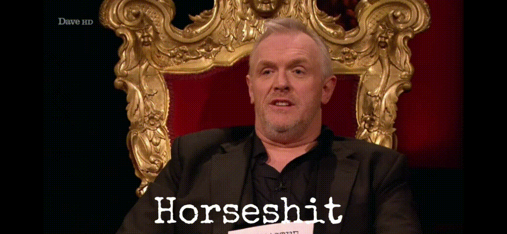

The Taskmaster's Potty Mouth
Your Task
Find out whether the Taskmaster (Greg Davies) has become more or less foul mouth over time.

This post is an extension of this profanity based post.
The Profanity Rate Approach
One way to answer our question is to use Profanity Rate that we previously defined in the aforementioned post.
Recall that this sums up the number of profanity occurrences within a series for a particular person, and divides by the number of episodes in that series. This provides the number of times the person in question will swear in an episode of that series, on average.
Figure 1: The Taskmaster’s Profanity Rateover Time

Figure 1 shows the Taskmaster’s profanity rate over time (captured by series). Profanity rates range between approximately 2.5 (series 8) and 7 (series 7). Visually, there does appear to be a change in profanity rate from series 8 onwards; the profanity rate drops from between 4 to 7 (red area), to 2.5 and 5 (blue area).
The uptick in profanity rate in series 16 such that it could plausibly associated and drawn from the Series 1-7 profanity rate range. Could Greg be on the cusp of returning to his old foul mouthed ways?
There is some evidence to suggest that the Taskmaster has becomes less potty mouthed over time with a significant drop in profanity instances per episode from series 8 onwards. The profanity rate drops from between 4 to 7 (Series 1 to 7), to 2.5 and 5 (Series 8 to 16).
This could be seen as slightly counter intuitive as:
- We might assume that Greg, in his old age, has become more frustrated with life and contestants and thus more likely to swear.
- We might assume that as the show has progressed and evolved, Greg has played up his angry persona as the Taskmaster and thus more likely to swear.
However, there are questions surrounding whether this change in profanity is statistically significant. There is also a noticeable overlap between between two coloured areas in which the profanity rate values are common to both; the profanity rates associated with series 9, 10 and 16 could have plausibly been drawn from the “Pre Series 8” swearing regime.
There also potential questions around whether the the profanity rate is the ideal statistic to answer our question since it can be swayed by rogue observations.
Potential drawbacks to the Profanity Rate.
The profanity rate, which essentially is an average (mean) summary statistic, is highly influenced by outliers and extreme values. It is not considered a robust statistic and is highly sensitive to the data.
In addition, the Profanity Rate, by itself, also does not capture the potential distribution (spread) of profanity utterances sufficiently. That is, if we were to watch many episodes of Taskmaster, what are the range of profanity utterances we can expect to see (or hear), and how much do they vary across episodes.
For this reason, we might want to consider additional statistics to the profanity rate (the mean profanity utterances), which are more robust and highlight the spread of distribution. The median, and percentiles in general, are one way to address these two issues.
But before we can calculate these metrics, some additional work is required.
Case of the Missing Profanities
One feature of our data source is that if Greg (or any other person for this matter) did not swear at all in an episode, no records will be present in our underlying dataset. 0 profanities should be associated with these episodes, which currently aren’t being captured.
If we want to consider something beyond profanity rate (for example the median and percentiles of profanities uttered in an episode across a series), we would need to ensure that these profanity free episodes are captured. Without capturing this profanity free phenomena, our statistics would not be be accurate; here, the median and percentile would be inflated.
The “no records for profanity free” feature is not a flaw of the data source or of its design. However, due to the question we want to answer, it is an important consideration that has to be explicitly accounted for in our methodology.
Why Wasn’t This an Issue with Profanity Rate?
It is also worth remarking that that this “zero profanities” phenomena was not an issue for the profanity rate calculation. Recall the equation for profanity rate was:
\[\begin{equation} \texttt{Profanity Rate for Contestant C in series S} = \frac{\sum{\texttt{Profanity by contestant C in series S}}}{\texttt{Number of episodes in series S}} \tag{1} \end{equation}\]
The numerator (the top of the fraction) in Equation (1) will be unaffected if zero profanities were observed (whether explicitly captured or not). The denominator (the bottom) in Equation (1) shows that we normalise by the number of episodes in a series, and not the number of episodes in the series in which profanity was observed. It is this normalisation that means that the profanity rate is not affected by this phenomena.
Profanity Consistency
Before we potentially start capturing these “profanity free episodes” explicitly, we should assess whether this is an actual problem first. To do this, we define the Profanity Consistency Rate.
\[\begin{equation} \texttt{Profanity Consistency Rate for Series $i$} = \frac{\texttt{Number of Episodes in Series $i$ which featured at least 1 swear}}{\texttt{Number of Episodes in Series $i$}} \tag{2} \end{equation}\]
The Consistency Rate can be thought of as the proportion of episodes in a series in which at least one swear word was uttered by the Taskmaster. A Consistency Rate of 100% means that the Taskmaster swore in all episodes of the series at least once; consistency rate of 50% means the Taskmaster swore in half of the episodes of the series at least once.
For the purpose of this post, we will only consider and calculate the profanity consistency rate for the Taskmaster. However, the same logic applies for any other person of interest.
Figure 2: Taskmaster’s Profanity Consistency

Figure 2 plots the Taskmaster’s Profanity Consistency over time (series). Anything below 100% indicates that the Taskmaster did not swear in all episodes of that particular series.
From this we deduce that Greg was less irate in some episodes of Series 10, 11 and 15 as he did not swear in them.
Consequently, our current dataset does not include these “profanity free episodes”.
Putting on a Spread
These “profanity free episodes” records can be captured through data munging steps, namely LEFT JOIN with the episodes table (left table), such that if an episode does appear in our enhanced profanity table, we set the profanity utterance to 0.
Figure 3: Boxplots of Profanity Utterances

Figure 3 shows the boxplot of profanity utterances per episode, for each series. Boxplots are one way to show the distribution and spread of a quantity that is random, in this case, profanity utterances in an episode.
The thick black line in the center of the box (which the Taskmaster sits upon in this figure), represents the median profanity. 50% of profanity utterances in that series will lie above and below it respectively. The bottom and top bottom of the box represent the 25th and 75th percentile respectively (proportion of data lying below these values). The box will represent where at least 50% of observations will lie between. For sake of simplicity, I have not included the “whiskers” that are commonly used with boxplot figures; these whiskers show another spread range of observations. Individual observations which lie outside of the range are also displayed.
Some observations (but not all):
- The Profanity Boxplots show a similar behaviour and conclusion to that when considering the mean profanity; Greg has become less foul mouthed post Series 8 onwards. The median, and the main box, is noticeably lower from Series 8 onwards compared to pre Series 7.
- The size of the box varies more from Series 1-7 than after Series 8 onwards. This suggests that Greg was more volatile with his profanity usage in early seasons.
- However it is worth noting that Series 1 to 5 were shorter in length than Series 6 onwards. From Series 6 onwards, a series contains 10 episodes. Prior to this, a series could be as short as 5 episodes (Series 2 and 3), and long as 8 episodes (Series 4 and 5). Due to the limited number of data points in these earlier, short series, some care needs to be taken from the conclusions we draw from them.
- We continue to see an overlap in data from the two regimes; the lower proportion of the boxplots in the “High Profanity Regime” (Series 1 to 7) overlaps with the top proportion of the boxplots in the “Low Profanity Regime” (Series 8 onwards)
- Series 4 has the the smallest sized boxplot. This indicates relatively little spread and deviation in the profanity utterances per episode. Greg is pretty consistent in uttering five profanities per episode in this season.
- Series 7 has the largest boxplot and thus the greatest spread. Greg isn’t as consistent and is more random with is profanity utterances in this series.
- Series 16 shows an uptick in profanities utterances to a level similar to pre Series 8; the median for series 16 is 5. Could this be the start of a new regime? Data from Series 17 onwards would help support or debunk this hypothesis.
- Not all series boxplots are symmetrical, for example see Series 8 and 9. This indicates that there is some skewness in the profanity utterance distribution.
- Series 8 is negatively skewed; the median is closer to the top of the box, and a greater concentration of observations are in the top of the box.
- Conversely, Series 9 is positively skewed, the median closer to the bottom of the box, and a greater concentration of observations are in the bottom of the box.1
To Mean or Median…
As we start to conclude this post, we bring it back to two single summary statistics, namely the profanity rate (also known as the mean profanity utterance), and the median profanity utterance. To end, we simply compare the profanity rate and the median profanity to see if there are any substantial differences between the two statistics.
Figure 4: Comparing the Mean (Average) and Median Profanity Utterances per episode

Figure 4 indicates that there is relatively little difference between the mean and median:
- the mean and median are generally aligned sharing similar, but not identical, values
- similar in value suggests that there are no extreme values or outliers which would affect the mean more than the median.
- series where the mean and median deviate the most correspond to skewed boxplots (see Series 9 and 10).
- the two statistics exhibit the same overall trend over Series time is the same; profanity in Series 1-7 was generally at a higher occurrence rate than profanity from Series 8 onwards.
- This could have been different if the mean and median were vastly different in value.
With the mean and the median being so similar in value and behaviour from Figure 4, we may ask ourselves what was the whole point of this exercise if we achieve the same conclusions. Well, I would say that we were “lucky” in this scenario and if Taskmaster has taught us anything, it is that there doesn’t necessary to be a point for everything.
The Copout Answer
Those new to statistics may want to definitively know which statistic to use in life. Unfortunately there is no clear cut answer for this, and it largely depends on the problem and the application. Both statistics have their advantages and disadvantages, and its important to consider what is best for the task in hand.
- The mean is more commonly accepted amongst the general public and can be efficiently computed over time (for example if we were being drip fed observations slowly over time, it easy to calculate the new mean). However, it is very sensitive to outliers and extreme values.
- The median is less sensitive to outliers and extreme values. However, it can be more computationally intensive to compute over time and with large datasets (reordering the data is necessary to find the “new” midpoint observation)
One common theme that you can expect to see in the field of Statistics ( and life in general) is that there is often no single answer for everything and it is very rare to to have a clear, black-and-white answer and conclusion. Conclusions drawn from data and and statistical methods should also come with an understanding of potential drawbacks and limitations.
I hope the reader is prepared for the “50 Shades of Gray” conclusions we may be getting from The Median Duck project!
What Have We Learnt Today?

There is evidence to suggest that the Taskmaster has become less foul mouthed in recent series of the show.
The profanity uttered per episode has noticeably decreased:
- from 4 to 7 utterances in Series 1 to 7
- to 2 to 5 utterances from Series 8 to 16.
This can be seen by two different profanity statistics, the profanity rate and median profanity uttered per episode in a series, and a shift in the distribution (boxplots).
Little Alex Horne’s wholesome presence must be having an effect on him…

The uptick in Series 16’s profanity statistics does suggest that the Taskmaster may be returning to his high profanity rate regime.

Readers may be reassured to know that I still get negative and positive skew mixed up in direction. It might be because I also don’t know my left and right instinctively.↩︎